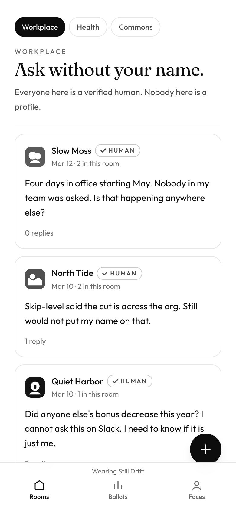
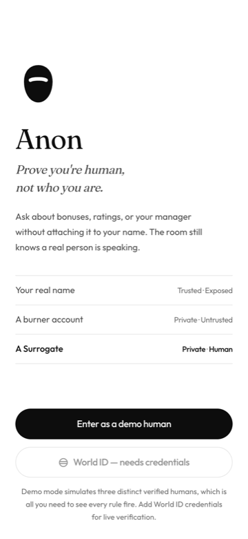
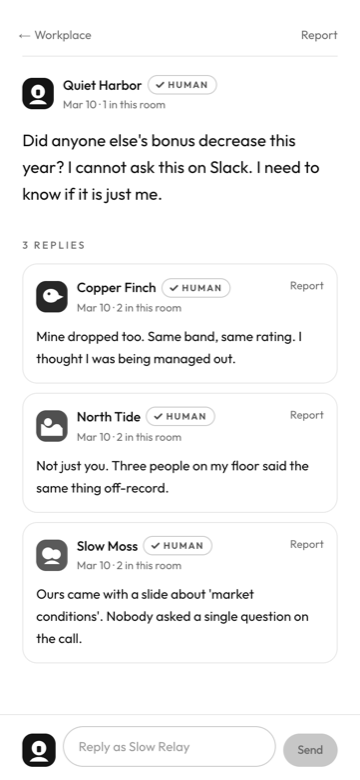
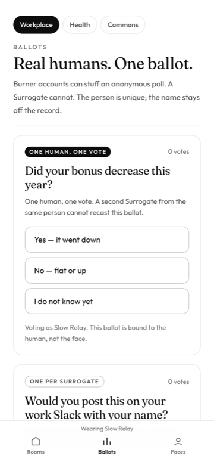
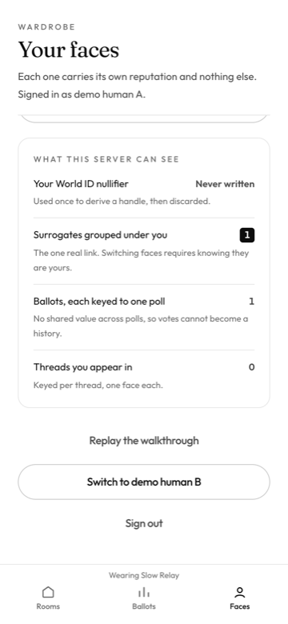

Prove you’re human, not who you are.
A World Mini App for the conversations you cannot have under your own name. World ID verifies the person once. A Surrogate is the face they wear in a room — and the room only ever sees the face.

The problem
Burner accounts are free. What is scarce is anonymity a room can trust — where the reader knows a distinct real person is speaking, and the speaker knows that is all the reader learns.
Ask about your bonus, your rating, or your manager. Nobody learns your name. Everybody knows you are one real person, speaking once.
How it holds up
A second Surrogate from the same person cannot recast a ballot.
Nobody becomes a crowd agreeing with itself.
A fresh face does not clear a consequence the person earned.

Verify once
One tap inside World App. Anon derives a handle from the proof and discards the rest — your nullifier is never written down.

Rooms and threads
Workplace, Health and Commons, each with a different face. The first Surrogate you speak with in a thread is the only one you can speak with there.

Ballots
One ballot per person, or one per face — stated before you vote. Switching Surrogates does not buy a second vote.

The honest part
A privacy app that only lists what it does not collect is asking to be taken on faith. Anon counts the real number from the live store and shows it to you.